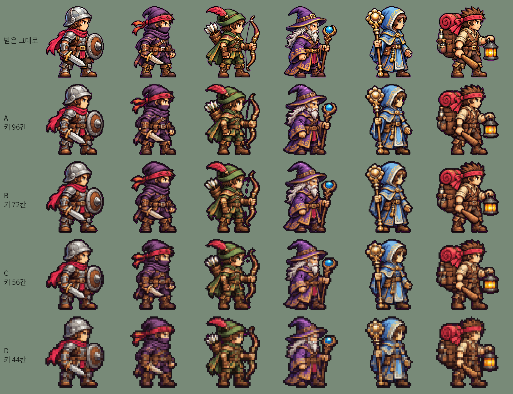

<title>도트 굵기 비교</title>
<meta name="claude:viewport-fit-sides" content="cover">
<link rel="stylesheet" href="https://fonts.googleapis.com/css2?family=Do+Hyeon&family=IBM+Plex+Sans+KR:wght@400;600&display=swap">
<style>
/* 배치: 한 줄 흐름 — 머리 → 순서(번호: 실제 차례) → 붙일 그림 셋(그림 · 크게 보기 · 저장) → 부탁 글 넷(글 · 복사) → 받은 뒤 볼 것.
   색은 궁수 그림에서: 두건 초록 · 가죽 갈색 · 버클 금색. 그림은 밝은 회색 판 그대로 보인다 */
:root {
  --bg: #eeedf4; --surface: #f9f8fc; --panel: #dcd9e8; --fg: #1c1a26; --muted: #5a5770; --line: #c8c4d8;
  --accent: #8a2f2a; --accent-fg: #ffffff; --label: #7a5a0c; --sheet: #c8ccd6; --code: #f3f1f9;
  --font-display: "Do Hyeon", "Apple SD Gothic Neo", "Malgun Gothic", "Noto Sans KR", system-ui, sans-serif;
  --font-body: "IBM Plex Sans KR", "Apple SD Gothic Neo", "Malgun Gothic", "Noto Sans KR", system-ui, sans-serif;
  --font-data: ui-monospace, "SFMono-Regular", Menlo, Consolas, monospace;
}
@media (prefers-color-scheme: dark) { :root:not([data-theme="light"]) { --bg: #16151d; --surface: #1f1d29; --panel: #2e2b3c; --fg: #ebe7f2; --muted: #a39fb4; --line: #383548; --accent: #d0564c; --accent-fg: #ffffff; --label: #f0c45a; --sheet: #c8ccd6; --code: #1b1a24; color-scheme: dark } }
:root[data-theme="dark"] { --bg: #16151d; --surface: #1f1d29; --panel: #2e2b3c; --fg: #ebe7f2; --muted: #a39fb4; --line: #383548; --accent: #d0564c; --accent-fg: #ffffff; --label: #f0c45a; --sheet: #c8ccd6; --code: #1b1a24; color-scheme: dark }
*, *::before, *::after { box-sizing: border-box }
body { background: var(--bg); color: var(--fg); font-family: var(--font-body); font-size: 15px; line-height: 1.6; word-break: keep-all; overflow-wrap: break-word; padding-block: 28px 56px; padding-left: max(16px, env(safe-area-inset-left, 0px)); padding-right: max(16px, env(safe-area-inset-right, 0px)) }
.wrap { max-width: 820px; margin-inline: auto; display: grid; gap: 44px; grid-template-columns: minmax(0, 1fr) }
h1, h2, h3, p, ul, ol, figure, pre { margin: 0 }
ul, ol { padding: 0; list-style: none }
h1, h2 { font-family: var(--font-display); font-weight: 400; text-wrap: balance; line-height: 1.15 }
h1 { font-size: clamp(30px, 7vw, 42px) }
h2 { font-size: 24px }
h3 { font-size: 16px; font-weight: 600 }
.top { display: grid; gap: 10px }
.eyebrow { color: var(--label); font-size: 13px; font-weight: 600; letter-spacing: .04em }
.lede { max-width: 36em }
.sec { display: grid; gap: 18px; grid-template-columns: minmax(0, 1fr) }
.note { color: var(--muted); font-size: 14px; max-width: 44em }
.steps { counter-reset: n; display: grid; gap: 12px; max-width: 46em }
.steps li { counter-increment: n; padding-left: 34px; position: relative }
.steps li::before { content: counter(n); position: absolute; left: 0; top: 1px; width: 24px; height: 24px; display: grid; place-items: center; font: 400 15px/1 var(--font-display); background: var(--accent); color: var(--accent-fg); border-radius: 4px }
.item { display: grid; gap: 10px; grid-template-columns: minmax(0, 1fr) }
.item .what { display: grid; gap: 2px }
.row { display: flex; flex-wrap: wrap; gap: 8px; align-items: center }
.msg { color: var(--muted); font-size: 13px }
.msg:empty { display: none }
.btn { font: 600 14px/1 var(--font-body); padding: 11px 14px; border-radius: 6px; border: 1px solid var(--line); background: var(--surface); color: var(--fg); cursor: pointer }
.btn[aria-pressed="true"] { background: var(--fg); border-color: var(--fg); color: var(--bg) }
.btn.go { background: var(--accent); border-color: var(--accent); color: var(--accent-fg) }
.btn:disabled { opacity: .6; cursor: default }
.btn:focus-visible { outline: 2px solid var(--label); outline-offset: 2px }
.frame { overflow-x: auto; background: var(--sheet); border: 1px solid var(--line); border-radius: 8px }
.frame img { display: block; width: 100%; height: auto; image-rendering: pixelated }
.frame.zoomed img { width: var(--zw); max-width: none }
.frame.soft img { image-rendering: auto }
.attach { color: var(--label); font-size: 13px; font-weight: 600 }
.req { font: 13.5px/1.65 var(--font-body); white-space: pre-wrap; background: var(--code); border: 1px solid var(--line); border-radius: 8px; padding: 14px 16px; max-height: 22em; overflow: auto; -webkit-user-select: text; user-select: text }
.list { display: grid; gap: 10px; max-width: 46em }
.list li { padding-left: 18px; position: relative }
.list li::before { content: ""; position: absolute; left: 2px; top: .62em; width: 6px; height: 6px; background: var(--label) }

.mock { position: relative; width: 100%; aspect-ratio: 2172 / 724; container-type: inline-size; border: 2px solid #000; overflow: hidden; border-radius: 6px; background: #c9d6c2; }
.mock .b { position: absolute; left: 0; right: 0; display: flex; align-items: center; justify-content: center; text-align: center; font-size: 2.9cqw; line-height: 1.25; color: #f2f4e8; box-sizing: border-box; border-top: 1px dashed rgba(0, 0, 0, .45); padding: 0 1cqw; }
.pts { margin: 0; padding-left: 1.2em; display: grid; gap: 4px; }
</style>
<main class="wrap">
  <header class="top"><p class="eyebrow">미궁도시 라비린토스 · 모험가</p><h1>도트 굵기 비교</h1><p class="lede">받아 오신 여섯 명을 제가 도트 칸 수만 줄여 본 것입니다. 생김새는 그대로이고 굵기만 다릅니다. A ~ D 가운데 원하는 굵기를 골라 주세요.</p></header>
  <section class="sec"><div class="what item"><h2>같은 그림, 굵기 네 가지</h2><p class="note">맨 윗줄이 받은 그대로(키가 도트 400칸쯤이라 일반 그림에 가깝습니다). 아래로 갈수록 도트가 굵어집니다. 색은 한 명에 40색으로 묶고 바깥에 한 칸 외곽선을 둘렀습니다.</p><p class="note" id="save-hint">저장 단추가 보이지 않으면 그림을 길게 눌러 저장해 주세요.</p></div>
    <div class="item"><div class="frame" id="f-a"></div><div class="row"><button class="btn" type="button" data-zoom="f-a" aria-pressed="false">크게 보기</button><button class="btn go" type="button" data-save="px_compare.png" hidden>저장</button><span class="msg" role="status"></span></div></div>
    <ul class="list"><li><b>A · 96칸</b> — 얼굴과 옷 무늬가 거의 다 남습니다. 도트 느낌은 약합니다.</li><li><b>B · 72칸</b> — 눈 · 입이 남고 도트가 또렷이 보입니다. 지금 몬스터와 비슷한 굵기입니다.</li><li><b>C · 56칸</b> — 확실한 도트 그림. 얼굴은 눈만 남고 작은 무늬는 뭉개집니다.</li><li><b>D · 44칸</b> — 예전 전사(40칸)와 비슷한 굵기. 형체만 남습니다.</li></ul>
  </section>
  <section class="sec"><div class="what item"><h2>두 가지 길</h2></div>
    <ul class="list"><li><b>제가 줄이기</b> — 지금 받은 그림을 그대로 두고, 영상에서 뽑은 장면을 고르신 굵기로 제가 줄입니다. 영상 도구에는 받은 그대로의 큰 그림을 올리는 편이 움직임이 잘 나옵니다. 다시 받을 필요가 없습니다.</li><li><b>GPT에서 굵게 다시 받기</b> — 아래 글을 붙이면 처음부터 굵은 도트로 그려 줍니다. 손으로 찍은 느낌은 이쪽이 더 납니다. 다만 영상 모델은 굵은 도트를 움직이면서 뭉개는 일이 많아, 결국 뽑은 뒤에 제가 한 번 더 굵기를 맞춰야 합니다.</li></ul>
    <div class="item"><div class="what"><h3>GPT에 붙일 글 — 더 굵은 도트로</h3><p class="attach">붙일 그림: 방금 받은 여섯 명 그림</p><p class="note">64칸으로 적었습니다. 위에서 고른 굵기가 다르면 그 숫자만 바꿉니다.</p></div><pre class="req" id="req-1" tabindex="0">붙인 그림: 방금 그려 준 모험가 여섯 명.
같은 여섯 명을 생김새 · 옷 · 색 · 자세 · 자리 그대로, 도트를 더 굵게 다시 그려 주세요.

· 캐릭터 한 명의 키가 도트 약 64칸이 되게 — 지금은 칸이 너무 잘아서 일반 그림처럼 보입니다. 16비트 게임기 시절 도트 그림의 굵기로
· 한 칸 한 칸이 눈에 보이는 정사각형 도트. 칸 사이를 흐리게 잇거나 반 칸짜리 점을 찍지 않는다 (안티에일리어싱 없음)
· 색 수를 줄인다 — 한 명에 24색 안팎. 면마다 밝은색 · 중간색 · 어두운색 세 단계로 또렷하게 나누고, 부드러운 번짐(그라데이션) 대신 도트 무늬로 명암을 낸다
· 외곽선은 도트 한 칸 굵기의 어두운 선으로 끊김 없이
· 작은 무늬(옷의 금실 무늬 · 버클 · 끈)는 줄이고 큰 덩어리가 읽히게
· 가로 3칸 × 세로 2줄, 가로 : 세로 = 3 : 2, 바탕 단색 자홍 #FF00FF, 글자 · 그림자 · 바닥 없이 — 앞 그림과 같은 규격</pre><div class="row"><button class="btn go" type="button" data-copy="req-1">글 복사</button><span class="msg" role="status"></span></div></div>
  </section>
</main>
<script>
const $$ = s => Array.from(document.querySelectorAll(s));
const msgOf = b => b.parentElement.querySelector('.msg');
const W = { 'f-a': 2156 };
$$('[data-zoom]').forEach(b => { const f = document.getElementById(b.dataset.zoom); f.style.setProperty('--zw', W[b.dataset.zoom] + 'px');
  b.addEventListener('click', () => { const on = f.classList.toggle('zoomed'); b.setAttribute('aria-pressed', on ? 'true' : 'false'); }); });
// 글 복사: 안 되면 글을 골라 둔다
$$('[data-copy]').forEach(b => b.addEventListener('click', async () => {
  const pre = document.getElementById(b.dataset.copy), msg = msgOf(b);
  try { await navigator.clipboard.writeText(pre.textContent); msg.textContent = '복사했습니다.'; }
  catch (_) { const r = document.createRange(); r.selectNodeContents(pre); const s = window.getSelection(); s.removeAllRanges(); s.addRange(r); pre.focus(); msg.textContent = '여기서는 바로 복사가 안 됩니다. 글을 골라 두었으니 길게 눌러 복사해 주세요.'; }
}));
// 저장 (보는 쪽에서 저장을 받아 줄 때만 단추를 보인다)
(async () => {
  let dl = null;
  try { dl = window.claude && window.claude.use ? await window.claude.use('downloads') : null; } catch (_) { dl = null; }
  if (!dl) return;
  document.getElementById('save-hint').hidden = true;
  $$('[data-save]').forEach(b => { b.hidden = false; b.addEventListener('click', async () => {
    const msg = msgOf(b); b.disabled = true; msg.textContent = '';
    try { const blob = await (await fetch(b.dataset.save)).blob(); await dl.save({ filename: b.dataset.save, data: blob }); msg.textContent = '저장했습니다.'; }
    catch (e) { const c = e && e.code; msg.textContent = c === 'declined' ? '저장을 취소했습니다.' : c === 'rate_limited' ? '잠시 뒤에 다시 눌러 주세요.' : '여기서는 저장할 수 없습니다. 그림을 길게 눌러 저장해 주세요.'; }
    b.disabled = false; }); });
})();
</script>